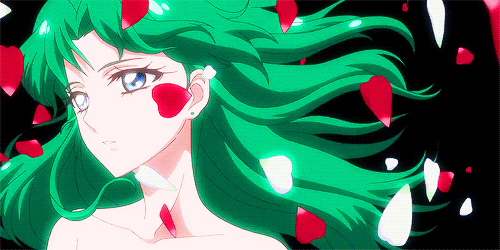
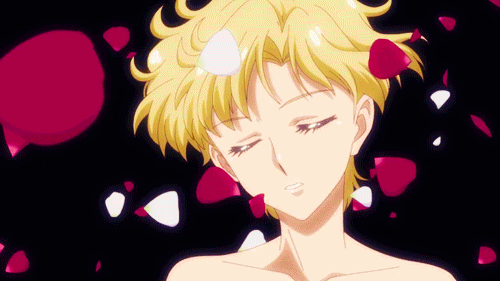

Secreto de la luna
Sailor Neptune
click aqui

Ella es la reencarnación de Sailor Neptune, una Sailor Scout del
sistema solar exterior que provenía del planeta Neptuno y
protegía un reino llamado el Milenio de Plata en su vida pasada.
Sailor Uranus
click aqui

aruka Ten'ō es una joven que puede transformarse en Sailor Uranus,
una guerrera cuyos poderes poseen grandes afinidades con el aire y
la dimensión del espacio